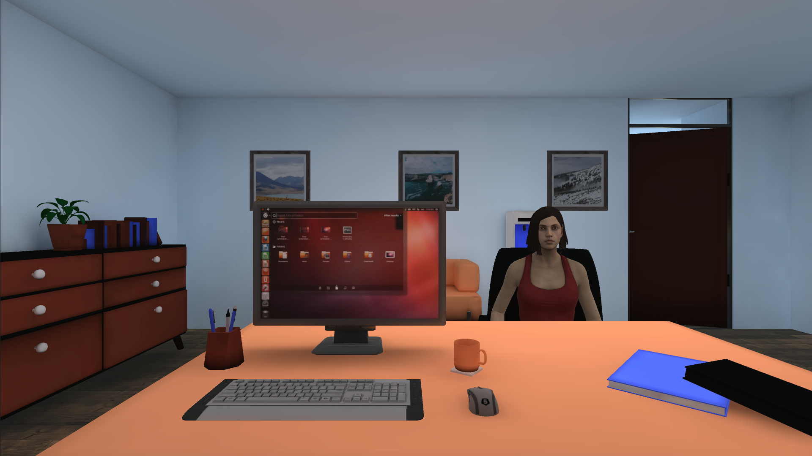

UPAT
Mixed Reality · Unity · Meta Quest 3 · C# · Pico XR SDK · Eye Tracking · Medical Education · Research Applications
UPAT, short for Unseen Patient Attention Training, was the focus of my bachelor thesis at TH Köln. The
idea behind the project was to explore how Virtual Reality could be used to train attention during
doctor-patient interactions. The motivation for this came from the fact that patients sometimes feel
like they are not being listened to properly by their doctors, for example when their concerns are not
actively addressed or they are interrupted before they can fully explain their problems. Since paying
attention to a patient and maintaining eye contact are important parts of a conversation, we wanted to
explore how these behaviours could be trained in a controlled virtual environment.
The application itself was not developed entirely from scratch. During a practical project prior to my
bachelor thesis, an initial prototype had already been created, which provided the foundation for the
work I did afterwards. My main goal was to take this prototype and turn it into an application that
could actually be used for scientific research. This meant not only improving the existing
functionality, but also making the application easier to configure, extending its software architecture,
and implementing a system for collecting data during training sessions.
The main question behind the project was how a VR-based attention training could be designed in a way
that allowed researchers to investigate the influence of visual feedback on attention during
doctor-patient interactions. This was especially interesting because the application was intended to be
used for future research, meaning that it had to be flexible enough to support different experiments
rather than being limited to one fixed training scenario.
Before starting with the actual implementation, I first looked into existing research on VR training
simulations, attention training, eye-tracking, and something called Visual Delegates. I also analysed
several existing applications, including VERA, Wildcard, and Dimensional Search, to get a better
understanding of how similar systems were designed and which of their features could be useful for UPAT.
One of the most important technologies for the project was eye-tracking. Instead of relying on
controller inputs or head movements, the application uses the user's actual gaze to determine where
their attention is directed. This is particularly useful in a medical conversation, where someone might
be looking around the room without necessarily moving their head. By tracking the user's gaze, the
application can detect when they stop looking at the virtual patient and use this information to provide
feedback.
Another important part of the research was the concept of Visual Delegates. These are visual effects
that are used to communicate something that the user cannot directly experience or perceive. They are
often found in video games, where they can be used to visualise things like pain, damage, or emotional
states. For UPAT, the idea was to use the same principle to communicate a loss of attention. Instead of
simply recording that the user had stopped looking at the patient, the application would also change the
appearance of the virtual environment to make this loss of attention noticeable.


The basic training scenario is relatively simple. The user enters a virtual medical environment and is
asked to keep their attention focused on the virtual patient. The application uses a PICO Neo 3 Pro Eye
headset with integrated eye-tracking to determine whether the user is looking at the patient. If the
patient is ignored for longer than a predefined period of time, the application activates the selected
Visual Delegates. When the user looks back at the patient, the visual effects can gradually disappear
again.
The prototype already had a working version of this interaction, so my main task was to improve the
existing system and make it more flexible. At the beginning of my work, three different Visual Delegates
were already being used: a vignette effect, a film-grain effect, and a grey filter. Each of these
changes the appearance of the user's field of view in a different way. The vignette darkens the edges of
the view, the film-grain effect adds a grainy appearance, and the grey filter reduces the colours in the
environment.
The important part was that these effects should not just be hardcoded into the application. Since the
goal was to use UPAT for research, it needed to be possible to change the effects, adjust their
parameters, and combine them in different ways. This would allow researchers to investigate whether
different types of visual feedback have different effects on the user's attention.


One of the biggest technical challenges was the existing implementation of the Visual Delegates. Since
the original prototype was mainly designed to demonstrate the concept, each effect had its own script
that handled its behaviour. This worked well enough for the initial version, but it would have become
increasingly difficult to maintain if we wanted to add more effects in the future. Every new Visual
Delegate would require another implementation of similar functionality, which would lead to duplicated
code and make it harder to keep the different effects consistent.
To solve this problem, I redesigned the Visual Delegate system and built a more modular architecture in
Unity. I introduced a shared base class that defines the common properties and functionality that every
Visual Delegate needs. This includes things like its name, its classification, and the parameters used
to control its appearance. I also introduced specialised subclasses for different types of effects, so
that functionality shared by several effects could be implemented once and reused.
Unity Scriptable Objects were particularly useful for this. They allow individual Visual Delegates to be
created and configured directly in the Unity Editor, without having to write a new script for every
variation. For example, a researcher can create a new vignette effect and adjust its parameters through
the Inspector. The effect can then be used by the existing system without requiring changes to the
underlying architecture.
I also implemented a Visual Delegate Manager that controls the active effects during the training.
Instead of every effect managing its own timing independently, the manager coordinates the changes in
their parameters and handles the fade-in and fade-out behaviour. This separated the logic of the
individual effects from the logic needed to control them during a training session and made it much
easier to extend the application.


Another feature I added was the ability to group several Visual Delegates together into collections. The
reason for this was that researchers would probably want to test different combinations of effects
rather than configuring every effect individually each time they wanted to run an experiment. With the
new system, multiple Visual Delegates can be grouped into a collection that can be reused whenever
needed.
Each collection contains a name, a description, and a list of the Visual Delegates it includes. The
available collections are loaded automatically when the application starts, which means that new
combinations can be created in the Unity Editor and then selected directly in the application. This also
makes it easier to introduce new experimental conditions in the future, since researchers do not need to
change the training logic just to test a different combination of effects.
This was an important step towards making the application useful for research. I did not want UPAT to be
something that could only be modified by someone who understood the entire codebase. Instead, the idea
was to create a system where researchers could configure different training conditions themselves and
use the existing architecture to test their own ideas.
Besides changing the underlying architecture, I also worked on the user interface of the application.
The original prototype did not provide a dedicated menu for configuring the training, so I implemented a
start menu where researchers can select a Visual Delegate Collection and adjust the most important
training parameters before starting a session.
These parameters include how long the virtual patient can be ignored before the Visual Delegates are
activated, as well as how quickly the effects fade in and out. The menu also allows the researcher to
enter a participant ID, set the training duration, and select the type of training run. All of these
settings are passed to the corresponding systems and applied when the training starts.
This might seem like a relatively small feature compared to the new software architecture, but it makes
a big difference when the application is used repeatedly for experiments. Instead of having to change
values in the Unity Editor or modify the code between sessions, researchers can configure the training
directly through the interface. This also reduces the possibility of accidentally using the wrong
settings for a particular participant.


Another important part of the project was collecting data during the training. Since UPAT was being
developed for scientific studies, it was not enough for the application to simply run the training
scenario. Researchers also needed a way to analyse what happened during a session afterwards.
For this reason, I implemented a Research Data Collector that automatically records relevant events and
saves them to CSV files. These include events such as when the user loses focus on the virtual patient
and when they look back at the patient again. The collector also stores timestamps and the parameters
used during the training, allowing the recorded events to be analysed in relation to the course of a
session.
I also implemented a separate training timer that controls the duration of a session and provides
information about the elapsed time to the other systems. This allows the recorded events to be
associated with a specific point in the training instead of being stored without any information about
when they occurred. By combining the timer with the data collector, the application can automatically
generate structured data that can later be used for analysis.
The participant ID entered through the start menu is also passed to the data collector so that the
resulting files can be assigned to the correct participant. This was particularly important because
different training conditions and participant groups may need to be compared in future studies. Having a
consistent way to collect and organise the data makes these comparisons much easier.


During the development process, I also spent time reorganising the overall Unity project. Since the
application was intended to be extended by other researchers in the future, it was important that the
different systems were clearly separated and easy to find. The Visual Delegate Manager, Research Data
Collector, training timer, and other important components were therefore organised into separate objects
with clearly defined responsibilities.
I also tried to keep the scene hierarchy and folder structure as understandable as possible, so that
someone opening the project for the first time would not have to search through a large number of
unrelated objects and scripts. The goal was to make it relatively straightforward to locate the relevant
components and add new functionality without having to understand every part of the application first.
Throughout the project, I followed agile development methods and regularly discussed the concept and
implementation with a researcher who represented one of the intended user groups. This helped me make
sure that the features I was developing were actually relevant to the way the application would
eventually be used. Since the goal was to support scientific studies, the focus was not just on creating
something that worked technically, but also on making it practical to configure, operate, and extend.
Of course, there were also some limitations that became apparent during the development process. One of
the main challenges was finding the right balance between keeping the training scenario simple enough
for controlled experiments and making it realistic enough to represent a doctor-patient interaction. The
current setup keeps the user seated and does not require them to move through the virtual environment,
which helps to keep the interaction straightforward and reduces unnecessary movement that could
contribute to simulator sickness.
At the same time, the virtual patient does not yet behave like a real person would during a
conversation. It does not actively react to the user through facial expressions, body language, or its
own gaze behaviour. Most of the feedback is provided through the Visual Delegates instead. While this is
useful for testing different types of visual feedback under controlled conditions, it also makes the
interaction less natural than a real conversation.
The training also focuses primarily on keeping the user's attention on the virtual patient for an
extended period of time. Other aspects of attention, such as switching between different targets or
dealing with controlled distractions, are not yet fully integrated into the training task. These would
be interesting areas to explore in future versions of the application.
Another important limitation is that the actual effectiveness of UPAT has not yet been evaluated in an
empirical study. Although existing research on VR-based attention training provided a useful foundation
for the concept, it cannot be assumed that the same results will apply to this specific application. It
is therefore still unclear whether the training improves attention, how users perceive the visual
feedback, and whether any potential improvements would carry over to real doctor-patient interactions.
Overall, my bachelor thesis focused on turning an existing VR prototype into a more flexible application
that can be used as a foundation for future research. The most important parts of this work were the new
modular Visual Delegate architecture, the start menu for configuring training conditions, and the
automated collection of attention-related data. Together, these features make it possible to test
different combinations of visual feedback and training parameters without having to change the source
code for every experiment.
The next step would be to evaluate the application in controlled studies to investigate both its
usability and its actual effect on attention. There is also room to make the virtual patient more
realistic, introduce additional Visual Delegates, and extend the training with more complex attention
tasks.
The full source code of the project is available below, as well as my complete bachelor’s thesis which
contains
further details about the research background, software architecture, implementation, and potential
directions for future work.